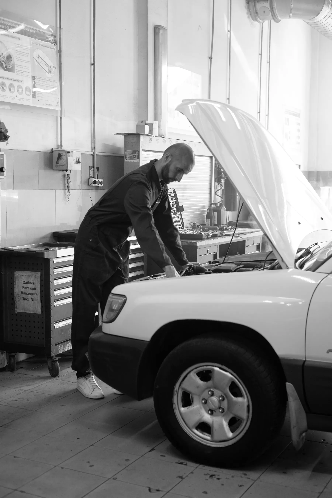
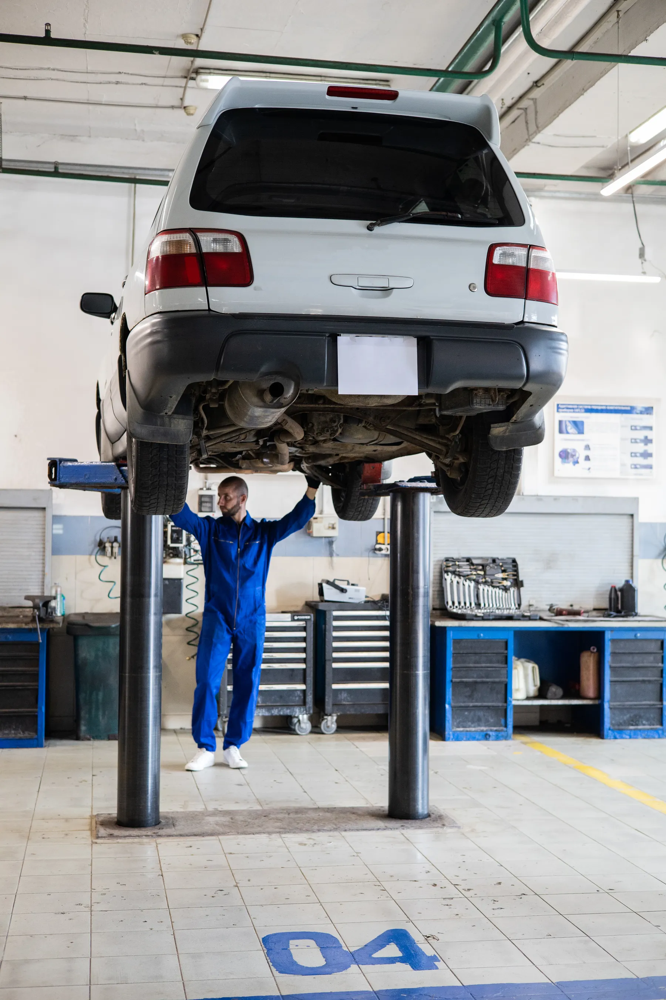
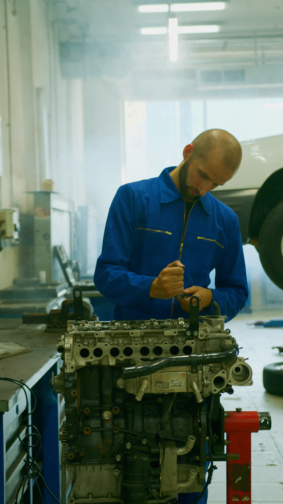
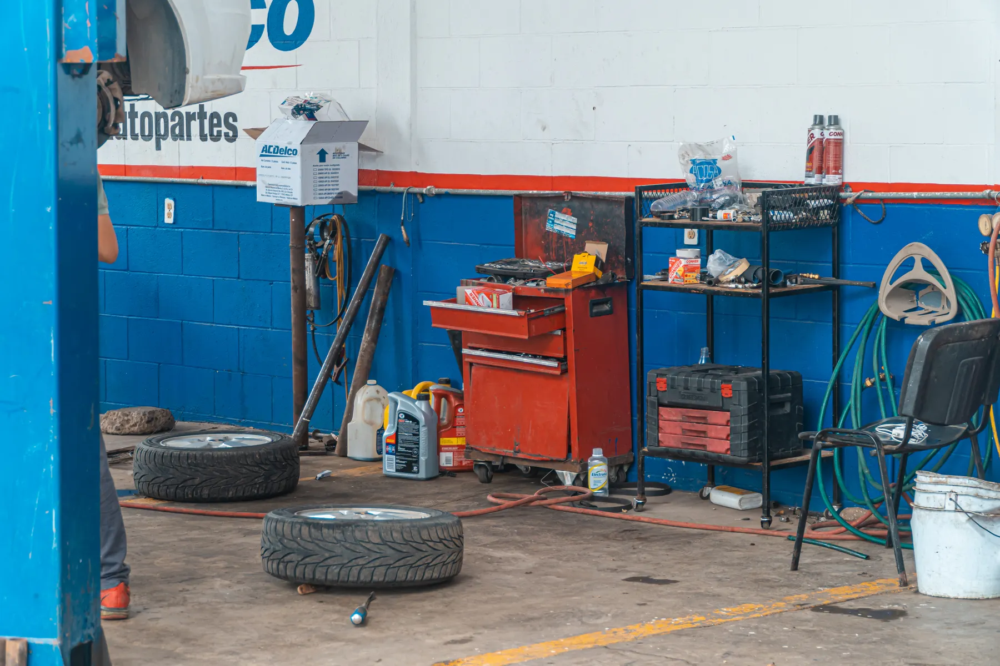

Mecânica automotiva
Converse sobre o comportamento do carro, uma necessidade de manutenção ou o serviço que procura. A Imperador confirma como pode atender.
Consultar serviçoSeu carro tem história.
Conte para a Imperador.





Uma conversa sobre o que seu carro precisa. Consulte serviços, peças e atendimento direto com a oficina.
Conversar no WhatsAppImagens ilustrativas de banco, sem representar a equipe ou o espaço da Imperador.
O primeiro passo é contar o que mudou no seu carro.
A Auto Mecânica Imperador reúne o contato da oficina e a consulta de peças em um só lugar. Use o WhatsApp para apresentar sua necessidade e combinar o atendimento.
Um ruído, uma dúvida ou uma peça que você procura: comece contando o que precisa.
Preparar mensagemFale sobre o veículo e consulte o atendimento indicado para o seu caso. Serviços, aplicações e valores são confirmados pela oficina.
Converse sobre o comportamento do carro, uma necessidade de manutenção ou o serviço que procura. A Imperador confirma como pode atender.
Consultar serviçoProcurando um conjunto de embreagem? Informe modelo e ano do veículo para consultar aplicação, marcas, disponibilidade e preço.
Consultar peçasConfira os horários disponíveis e combine a visita diretamente com a oficina. A confirmação acontece no contato.
Consultar agendaO perfil da Imperador informa funcionamento 24 horas. Confirme a disponibilidade e a modalidade de atendimento antes de se deslocar.
24hHorário informado no perfil
Motores, ferramentas e detalhes que fazem parte da rotina automotiva. Galeria ilustrativa de banco; não é um portfólio de trabalhos da Imperador.
Uma vista próxima dos elementos de um motor.
O automóvel visto além da carroceria.
Instrumentos e peças do universo automotivo.
Você não precisa conhecer o nome da peça ou saber a causa do problema. Estas informações ajudam no primeiro contato.
Escolha o assunto e prepare sua mensagem. Você abre a conversa e revisa tudo no WhatsApp antes de enviar.
(16) 99747-2305Prefere conversar por telefone? Toque no número para ligar diretamente para a oficina.
A mensagem é enviada por você no WhatsApp. A oficina confirma valores e disponibilidade.
Respostas para organizar sua consulta à Imperador.
Pelo WhatsApp ou ligação para (16) 99747-2305. O botão de contato desta página abre a conversa com a Auto Mecânica Imperador.
O perfil comercial informa funcionamento 24 horas. Confirme com a oficina a disponibilidade e a modalidade de atendimento para o seu caso.
Envie modelo, ano e motorização do carro, se souber. Consulte aplicação, marca, estoque e valor diretamente com a Imperador antes de escolher a peça.
Sim, entre em contato para consultar as condições do orçamento. Descreva a necessidade e pergunte se é preciso levar o veículo para avaliação.
Informe o serviço que procura ou os sinais que percebeu no carro. A oficina confirma os serviços disponíveis e as condições de atendimento.
Peça a localização pelo WhatsApp antes de sair. O endereço e a região de atendimento serão incluídos nesta página quando confirmados.
Converse com a Auto Mecânica Imperador.